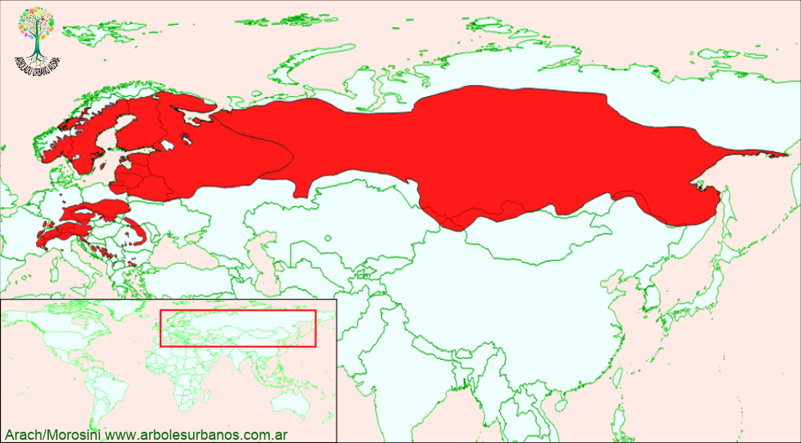

Click en las imágenes para ampliar

{kind=link}
{kind=link}
{kind=link}
{kind=link}
{kind=link}
Picea Común, Picea de Noruega, Abeto rojo, falso abeto
NOMBRE CIENTÍFICO: Picea Abies
FAMILIA BOTÁNICA : Pináceas
ORIGEN: Su área de distribución natural es muy extensa,se encuentra en Europa y Asia, desde los Alpes, Escandinavia (donde forma extensos bosques puros) y los Balcanes por el sur, Alemania, y las Repúblicas Bálticasademás del oeste de Rusia
DESCRIPCIÓN GENERAL: Esta conífera siempreverde, generalmente de porte esbelto, alcanzando alturas de entre 30 y 50 metros, existen datos de árboles que superan los 60 metros. Su corteza es grisácea o pardo rojiza. Tiene una copa muy densa de forma cónica. Sus ramas crecen en verticilos anuales, se disponen en forma horizontal, salvo las ramas cercanas al ápice que están orientadas hacia arriba.
HOJAS: Sus hojas son aciculares rígidas de color verde oscuro, en la primavera los brotes nuevos son de un color verde amarillenta, se disponen sobre los tallos de manera espiralada, quedando largo tiempo sobre estos cuando se caen o se las desprenden dejan un cicatriz en el tallo.
ESTRÓBILOS: Esta especie tiene los sexos en el mismo árbol, los estróbilos masculinos son de color rojizo en un principio luego amarillos al soltar el polen. Los femeninos al principio son rojizos y erectos, luego cuando están fecundados cuelgan péndulos formando un cono cilíndrico de unos 15 cm. de largo de color marrón, de consistencia semileñosa Una característica de las escamas seminíferas que forman el cono es su ápice separado o dentado. Una de las características del género Picea es que son péndulas a diferencia del género Abies , los verdaderos Abetos, cuyas piñas son erectas y se desarman a cuando maduran.
USOS: Tiene madera de color claro de grano fino y veta derecha, de buena calidad. Desde siempre se la ha utilizado, desde pasta de celulosa, construcciones, hasta para instrumentos musicales un ejemplo de esto son los famosos violines Stradivarius. También es muy utilizado en jardinería, plantado como ejemplar aislado, o formando cortinas y macizos. Se lo utiliza como árbol navideño.
REPRODUCCIÓN: Se la reproduce por medio de semillas, sembradas a comienzo de la primavera, deben tener una estratificación de 4 meses a 4º, tiene buen poder germinativo (cercano al 60%). También se la multiplica por medio de estacas.
PARTICULARIDADES: Es una conífera de lento crecimiento. Sus raíces se disponen de manera bastante superficial, soporta fríos intensos.